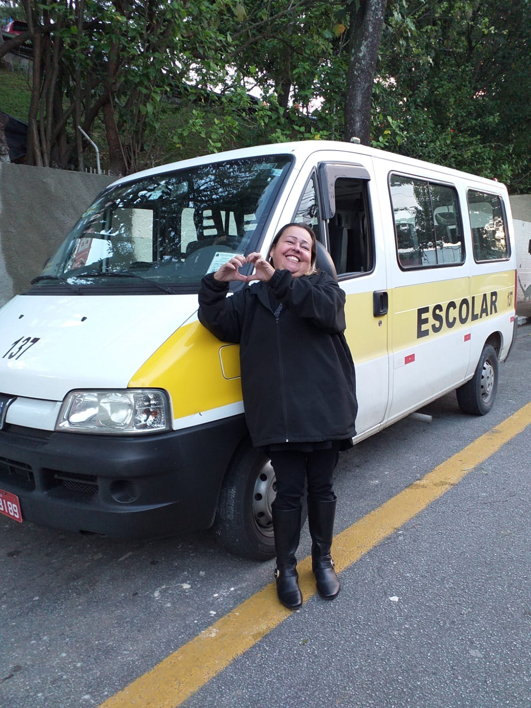
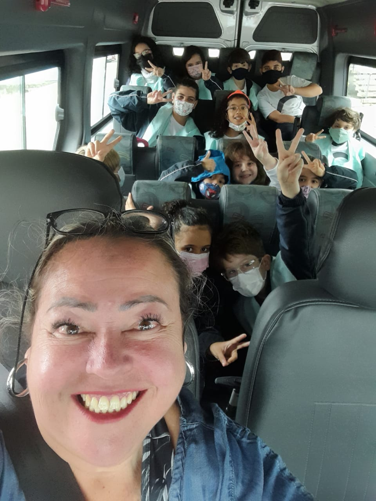

📸 Álbum de Fotos





🚸 Na Tia PatrÁcia, nosso compromisso é garantir o transporte seguro e confiável dos seus filhos. Com uma frota moderna e bem mantida, oferecemos um serviço de transporte escolar que prioriza a segurança e o conforto das crianças.
âš ï¸Resumo dos Serviçosâš ï¸: O Transporte Escolar Tia Patricia é especializado em oferecer transporte seguro e confiável para os estudantes da Escola Fundação Bradesco, localizada em Osasco, na Cidade de Deus. Com anos de experiência, nossa missão é garantir que as crianças cheguem à escola e retornem para casa de forma tranquila e pontual, proporcionando tranquilidade para os pais e responsáveis.
🔒 Nossa van é equipada com os mais altos padrões de segurança, incluindo cintos de segurança para cada assento e sistemas de rastreamento para monitorar a localização em tempo real. Confortável e espaçosa, a van proporciona uma viagem tranquila e agradável, com assentos confortáveis e ventilação adequada para todas as estações do ano.
🧑‍🤝‍🧑 Cada membro da nossa equipe é treinado para oferecer um atendimento cortês e profissional, garantindo que seus filhos cheguem à escola e voltem para casa com segurança. Acompanhamos rigorosamente as diretrizes de segurança e manutenção, e estamos sempre prontos para atender qualquer necessidade especial que seus filhos possam ter.
âš ï¸ A segurança das crianças é nossa prioridade número um. Realizamos inspeções regulares em nossos veÁculos para garantir que estejam sempre em perfeitas condições de uso. Além disso, nossas rotas são planejadas para minimizar o tempo de viagem e garantir a chegada pontual e segura aos destinos.
🚠O transporte da Tia PatrÁcia é totalmente regularizado e possui todos os selos e documentos em dia de vistoria, realizados pelas prefeituras de Jandira e Osasco. Garantimos a conformidade com as normas e regulamentos locais para oferecer um serviço seguro e de alta qualidade.
✅ Com a Tia PatrÁcia, você pode ter a tranquilidade de saber que seus filhos estão sendo transportados por profissionais experientes e dedicados, em um ambiente seguro e confortável. Estamos aqui para oferecer a melhor experiência de transporte escolar para sua famÁlia.
Atendemos os seguintes bairros em Barueri:
Atendemos os seguintes bairros em Jandira:
Se o seu bairro não estiver listado, entre em contato conosco para verificar a disponibilidade de serviço na sua área! 🏠
Para mais informações, entre em contato conosco:
📱 Telefone: +55 11 99692-9358
✉️ Enviar Email 💬 Contato pelo WhatsApp